Current Affairs — July 2026 · Class 5
Class 5 of the July 2026 monthly series (Ashish Gautam, Adda247) · 33 topics, grouped by exam category.
- Read once with Recall mode off. Hover over (or tap) any dotted name to see its static GK.
- Turn Recall mode on: the key facts are hidden. Say each one before you click to reveal it.
- Take the self-test at the end. Revise again tomorrow, in a week and in a month, using only the Rapid Revision box after that.
1PM Modi in Indonesia
Six news items from one visit — remember them as one trip with President Prabowo Subianto.
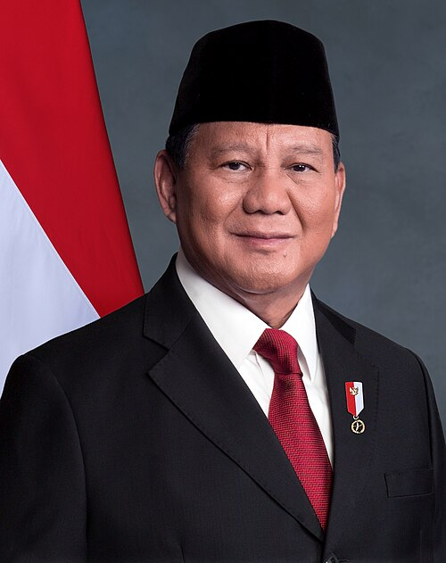
🎯 Likely QModi receives Indonesia's highest civilian honour
- Award: Bintang Adipurna of the Republic of Indonesia; presented by President Prabowo Subianto.
- Instituted in 1959.
- Modi also became the first Indian PM to address Indonesia's Parliament.
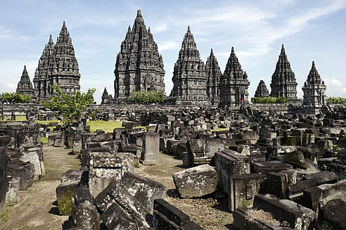
🎯 Likely QPrambanan Temple — joint conservation project
- UNESCO World Heritage Site in Yogyakarta; Indonesia's largest Hindu temple complex, 9th century.
- India's lead implementing agency: Archaeological Survey of India (ASIASIArchaeological Survey of IndiaEst. 1861HQ New DelhiMinistry of Culture).
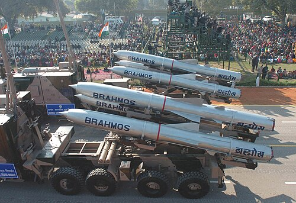
🎯 Likely QIndonesia signs to buy BrahMos and Astra missiles
- BrahMos supersonic cruise missile + Astra Beyond Visual Range Air-to-Air Missile (BVRAAM).
- Astra deal: Bharat Dynamics Ltd (BDL) with Republikorp, Indonesia.
- Indonesia = 3rd foreign BrahMos buyer (after Philippines and Vietnam) and the first foreign buyer of Astra.
IIM Bangalore to open a campus in Indonesia
- At Singhasari SEZ, East Java.
- First IIM abroad: IIM Ahmedabad, in Dubai.
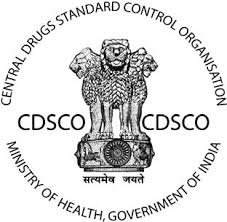
India–Indonesia MoU on medical products regulation
- Between CDSCOCDSCOCentral Drugs Standard Control OrganisationRegulates drugs, cosmetics and medical devicesUnder DGHS, Ministry of HealthHQ New DelhiHeaded by the Drugs Controller General of India (India) and Indonesia's National Agency of Drug and Food Control.
2Defence & Security
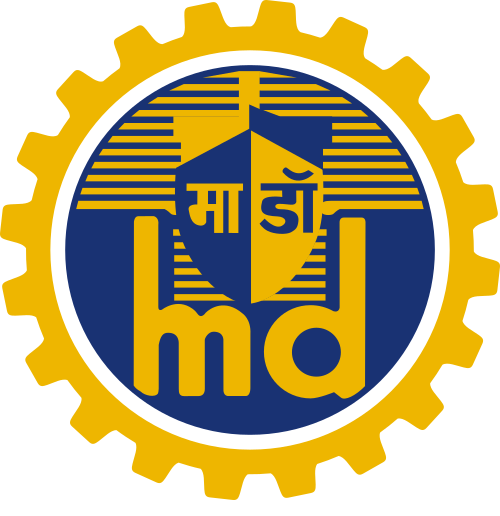
🎯 Likely QINS Mahendragiri commissioned
- Indigenous stealth frigate, commissioned at Visakhapatnam; 6th frigate under Project 17A.
- Designed by the Navy's Warship Design Bureau; built by Mazagon Dock Shipbuilders, Mumbai.
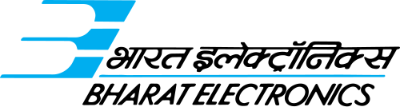
🎯 Likely QIndia–Japan sign first defence co-development agreement — UNICORN
- Signed during Japanese PM Sanae Takaichi's visit to India.
- First project: UNICORN (Unified Complex Radio Antenna) — shipborne integrated communication mast by NEC Corporation, Japan.
- Made in India by Bharat Electronics Ltd (BEL).
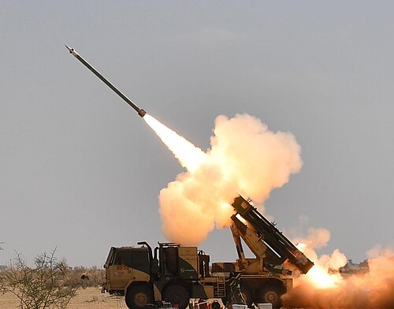
DRDODRDODefence Research and Development OrganisationEst. 1 January 1958HQ New DelhiMinistry of Defence tests Pinaka Long Range Guided Rocket — 60 km
- At Integrated Test Range, Chandipur, Odisha; hit target at a minimum range of 60 km.
- Upgrade of the Pinaka Multi-Barrel Rocket Launcher.
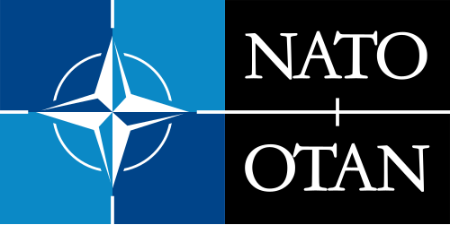
🎯 Likely Q36th NATONATOEst. 4 April 1949 (Washington Treaty)HQ Brussels32 members (32nd: Sweden)Secretary General Mark RutteArticle 5: attack on one = attack on all Summit — Ankara, Türkiye
- 36th summit; Türkiye's 2nd as host (first: Istanbul 2004).
3Science, Space & Health
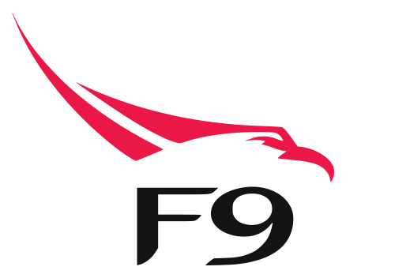
🎯 Likely QContact lost with Mission Drishti — world's first OptoSAR satellite
- By Bengaluru startup GalaxEye; lost after a geomagnetic solar storm.
- First to combine Electro-Optical imaging and Synthetic Aperture Radar on one platform; India's largest privately built Earth-observation satellite.
- Launched 3 May 2026 on SpaceX Falcon 9 from Vandenberg, California.
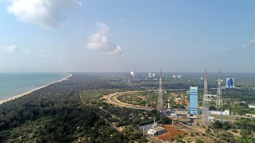
Cosmoserve Space demonstrates space-debris removal — Mission Embrace
- First demonstration of Active Debris Removal (ADR) by the startup.
- Piggyback payload on Skyroot's Vikram-1 (Mission Aagaman) from Sriharikota.
🎯 Likely QNovo Nordisk launches Awiqli — first once-weekly basal insulin
- Awiqli (Insulin Icodec) for Type 1 and Type 2 diabetes: 52 injections a year instead of 365.
- India: over 101 million with diabetes, ~136 million with prediabetes.
- NFHS-6 (2023–24): high blood sugar in 20.9% of men and 17.8% of women (15+).
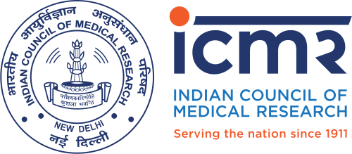
ICMR-MINDS wins gold at National e-Governance Awards 2026
- ICMRICMRIndian Council of Medical ResearchEst. 1911HQ New DelhiMinistry of Health & Family Welfare's AI platform for mental health and substance-use disorders.
- Given by DARPGDARPGDepartment of Administrative Reforms and Public GrievancesMinistry of Personnel, Public Grievances and PensionsGives the National e-Governance Awards; presented by Dr. Jitendra Singh at the 29th National Conference on e-Governance, Jaipur.
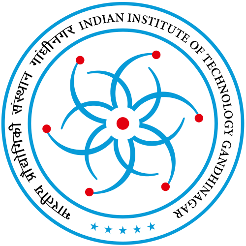
SAMARTH semiconductor hub at IIT Gandhinagar — ₹190 crore
- SAMARTH = Silicon and Advanced Semiconductor Manufacturing Research and Training Hub.
- Funded by MeitYMeitYMinistry of Electronics and Information TechnologyRuns Digital India, Gujarat Government and IIT Gandhinagar; to train 10,000+ people in five years.
DGCADGCADirectorate General of Civil AviationIndia's aviation regulatorUnder Ministry of Civil AviationHQ New Delhi certifies larger Embraer E-Jets for India
- Embraer is Brazilian; Star Air is the only Indian airline flying Embraer.
4Economy, Committees & Reports
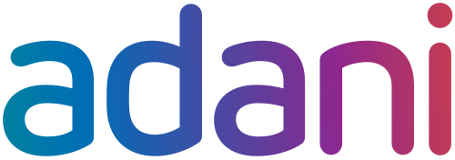
🎯 Likely QAdani–IRH ₹1.08 lakh crore aluminium project in Odisha
- Adani Enterprises + International Resources Holding (UAE): 50:50 JV; US$11.5 billion.
- Adani's entry into aluminium; India's largest FDI in metallurgy.
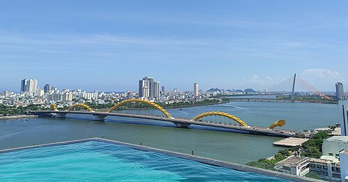
GIFT City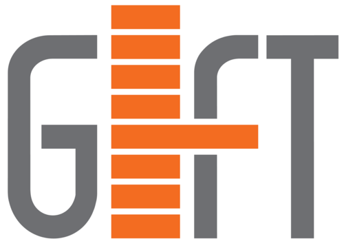
GIFT CityGujarat International Finance Tec-CityNear Gandhinagar, GujaratIndia's first IFSCRegulated by IFSCA MoU with Vietnam's Da Nang financial centre
- With VIFC-DN (Vietnam International Financial Center – Da Nang) for cross-border investment.
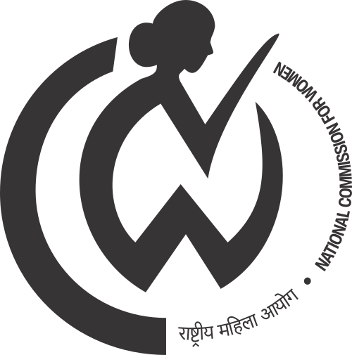
NCWNCWStatutory bodyEst. 31 January 1992 under the NCW Act, 1990HQ New DelhiFirst chair Jayanti Patnaik expert committee to review IVF clinic laws
- Reviews rules for IVF clinics, ART centres and gamete banks; chaired by Justice Asha Menon.
MoSPI Expert Committee on Energy Statistics
- Headed by Dr Rangan Banerjee.
5Culture & Awards
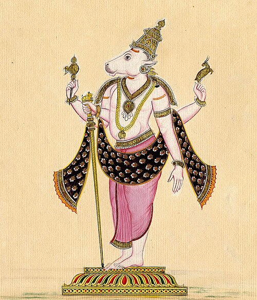
Australia returns three ancient antiquities to India
- Bronze Trishul of Goddess Bhadrakali · granite Nandi · basalt six-headed Karttikeya (Murugan).
- 11th–12th century; all from temples in Tamil Nadu.
Nepal's Jestha Varna Mahavihar wins UNESCOUNESCOEst. 16 November 1945HQ Paris194 members + 12 associate Asia-Pacific Heritage Award 2025
- 17th-century Buddhist monastery in Lalitpur; rebuilt after the 2015 earthquake with Indian funding.
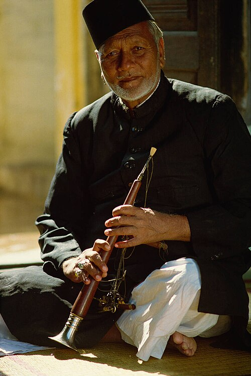
Ustad Bismillah Khan Yuva Puraskar 2025 — Haveli Sangeet honoured
- Acharya Shri Ranchhodlalji Goswami (Ahmedabad) — first Haveli Sangeet practitioner to win it.
- By Sangeet Natak AkademiSangeet Natak AkademiNational academy for music, dance and dramaEst. 1952HQ New DelhiMinistry of Culture; instituted 2006; for artists under 40; ₹25,000; 106 artists for 2024–25.
6Sports
Cricket records first — they are the most-asked.
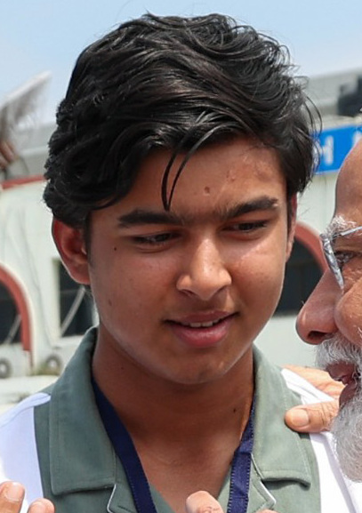
🎯 Likely QVaibhav Sooryavanshi — India's youngest international cricketer
- T20I debut vs England at Old Trafford, aged 15 years 99 days.
- Breaks Sachin Tendulkar's record (16 y 205 d, vs Pakistan, 1989); also beats Washington Sundar as youngest India T20I player.
- Overall records: youngest T20I — Marian Gherasim (Romania, 14 y 16 d); youngest international — Hasan Raza (Pakistan, 14 y 227 d, Test 1996).
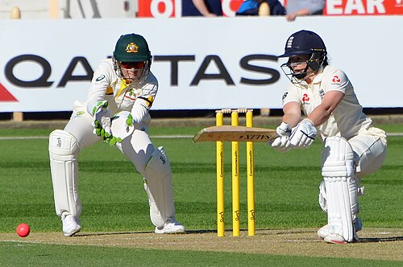
Tammy Beaumont retires
- England; last match the one-off Test vs India at Lord's — first women's Test at Lord's.
- Only the 2nd woman with centuries in all three formats.
Aswath S. — India's 98th Grandmaster
- 17, from Chennai; final wins at the Pune International Round-Robin.

🎯 Likely QTelangana to host 8th Khelo India Youth Games 2026
- Announced by Dr. Mansukh Mandaviya. First edition: Delhi; previous: Bihar.
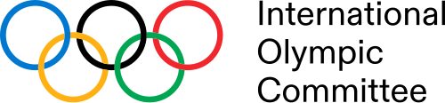
IOCIOCEst. 23 June 1894HQ LausannePresident Kirsty Coventry provisionally lifts Russia's suspension
- Russian athletes can enter more events, including LA 2028 qualifiers.
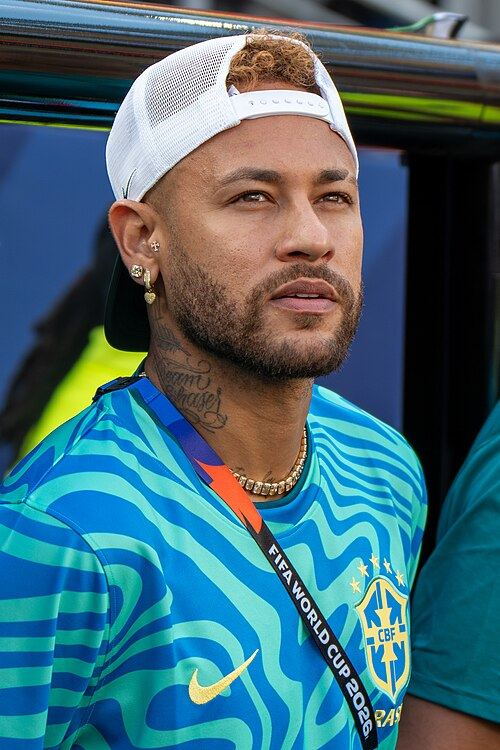
Neymar Jr retires from international football
- After Brazil lost 2-1 to Norway in the Round of 16, FIFA World Cup 2026.
- Brazil's all-time top scorer: 80 goals in 130 matches.
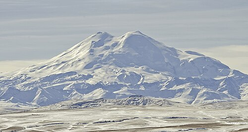
Tshering Choden (Sikkim) climbs Mount Elbrus
- Mount Elbrus (5,642 m), Europe's highest, in the Caucasus, Russia.
- Her 2nd of the Seven Summits, after Kilimanjaro (5,895 m, Africa) in Aug 2025.
7Important Days & Obituaries
6 July — World Zoonoses Day
- Awareness of diseases that pass between animals and humans.
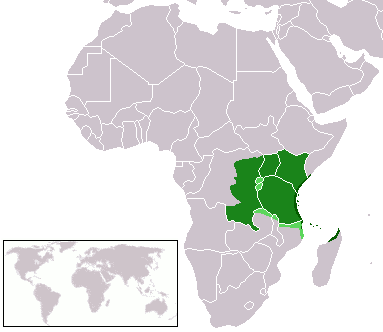
7 July — World Kiswahili Language Day
- Kiswahili: one of Africa's most spoken languages, 200 million+ speakers.
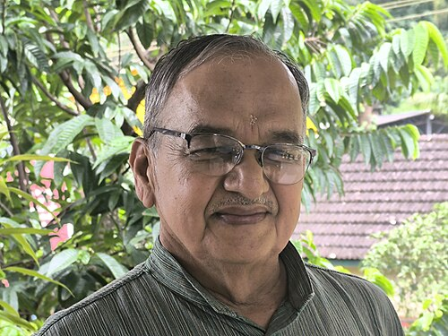
Girish Bharadwaj — "Bridge Man of India"
- Built 140+ hanging footbridges; Padma Shri 2017.
Shapoor Zadran (38) — former Afghanistan pacer
- 44 ODIs and 36 T20Is.
8Self-test
Answer out loud first, then click to check. Re-test the ones you missed tomorrow.
Indonesia's highest civilian honour given to PM Modi?
Bintang Adipurna (instituted 1959)
Where is Prambanan Temple, and who leads India's conservation work?
Yogyakarta, Indonesia — ASI
Indonesia is which number foreign buyer of BrahMos?
3rd (after Philippines and Vietnam); 1st for Astra
Where will IIM Bangalore's overseas campus be?
Singhasari SEZ, East Java, Indonesia
INS Mahendragiri: which project, and who built it?
Project 17A (6th frigate), Mazagon Dock Shipbuilders
What is UNICORN, and who will make it in India?
Unified Complex Radio Antenna (NEC, Japan) — BEL
Range shown in the Pinaka LRGR test?
60 km (Chandipur, Odisha)
Where was the 36th NATO Summit?
Ankara, Türkiye
What is Mission Drishti, and which startup built it?
World's first OptoSAR satellite — GalaxEye
Which mission demonstrated Active Debris Removal?
Mission Embrace (Cosmoserve), on Vikram-1
Name of the first once-weekly basal insulin?
Awiqli (Insulin Icodec), Novo Nordisk
SAMARTH semiconductor hub: where and how much?
IIT Gandhinagar, ₹190 crore
Adani–IRH aluminium project: value and JV split?
US$11.5 bn (₹1.08 lakh crore), 50:50, Odisha
Who chairs NCW's IVF-law committee?
Justice Asha Menon
Which Nepal monastery won the UNESCO Asia-Pacific award?
Jestha Varna Mahavihar, Lalitpur
India's youngest international cricketer and his age?
Vaibhav Sooryavanshi — 15 years 99 days
India's 98th Grandmaster?
Aswath S. (Chennai)
Host of the 8th Khelo India Youth Games?
Telangana
Height of Mount Elbrus, and who climbed it?
5,642 m — Tshering Choden (Sikkim)
Who is called the "Bridge Man of India"?
Girish Bharadwaj
⚡ Rapid Revision
- Indonesia trip: Bintang Adipurna · Prambanan (ASI) · BrahMos (3rd buyer) + Astra (1st) · IIM-B campus · CDSCO MoU · first PM to address Parliament.
- INS Mahendragiri: P-17A #6, MDL, Vizag. India–Japan UNICORN (NEC → BEL). Pinaka LRGR 60 km.
- NATO: 36th summit Ankara; HQ Brussels, 32 members, Article 5.
- Space: Drishti (GalaxEye, first OptoSAR) lost to solar storm · Mission Embrace (ADR) on Vikram-1.
- Awiqli: weekly insulin. ICMR-MINDS: e-Gov gold. SAMARTH ₹190 cr at IIT Gandhinagar.
- Adani + IRH ₹1.08 lakh cr aluminium, Odisha. GIFT City × Da Nang. NCW IVF panel: Asha Menon.
- Antiquities from Australia: Trishul, Nandi, Karttikeya (TN). Jestha Varna Mahavihar: UNESCO award.
- Sooryavanshi 15 y 99 d · Aswath 98th GM · KIYG 8th in Telangana · Neymar 80 goals · Elbrus 5,642 m.
- Days: 6 July Zoonoses · 7 July Kiswahili. Obits: Girish Bharadwaj, Shapoor Zadran.
End of July 2026 · Class 5